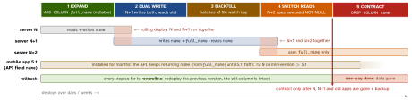

engineering · folio
In one line: Every schema change must be tolerated by all code that is still running — the old pods of a rolling deploy, the blue stack you may roll back to, and app versions installed on phones for months. So a breaking change becomes expand → migrate → contract across several releases, data moves in small batches, and every DDL holds its lock for milliseconds.
Download PDF Print view LaTeX source


Why every breaking change takes several releases
- A rolling deploy runs N and N+1 against one DB; a blue/green rollback brings N back; mobile clients are version N-k for months. A rename in one step breaks at least one of them.
- Rule: schema v must work with code N and N+1; code N+1 must work with schema v and v+1.
- Same for the API: add the field, keep the old one until its clients are gone; for app clients measure by version header, then raise the min version.
Expand / contract — rename name → full_name
- Expand: add the column nullable (or constant default), tables, indexes. Old code ignores them.
- Dual write (N+1): write both, still read old. Or a DB trigger — keeps writes from old code in sync too.
- Backfill old rows in batches (below). Verify: counts, checksums, sample diffs.
- Switch reads (N+2); then constraints:
NOT NULL, FK, unique. - Stop writing the old column; make the ORM ignore it (Rails
ignored_columns) or its cached column list breaks on drop. - Contract: drop column / trigger — after rollback window + old clients.
Backfill — batches, not one UPDATE
One UPDATE of 50 M rows = one huge transaction: row locks held for its whole length, WAL burst, replica lag, dead tuples. Instead: keyset batches (1–10k rows by PK), commit each, sleep, throttle on replica lag; idempotent (WHERE full_name IS NULL) and resumable; run as a job, not inside the deploy.
MySQL
ALGORITHM=INSTANT ADD/DROP COLUMN (default in 8.4, any position; 64 row versions, then a rebuild). Other changes: gh-ost — triggerless: copies into a ghost table and applies the binlog stream; throttle / pause, cut-over when you choose; pt-online-schema-change — same copy, but triggers on the live table (extra write load). Both end with an atomic RENAME.
Dual writes vs CDC (moving data to a new store)
App dual write = two non-atomic writes: one fails or reorders ⇒ silent drift; needs reconciliation. CDC (Debezium-style reading WAL/binlog) or a transactional outbox: one source of truth, ordered by log position, replayable. Snapshot + stream → verify → switch reads → switch writes.
Order around deploys · rollback
Expand before the code that needs it (old code must survive it); contract after the old code and the rollback window are gone. One migrator with an advisory lock — not every pod at start-up. A “down” migration after data is written loses data: roll forward; contract is the only one-way door, so back up (PITR) before it.
PostgreSQL — which lock, which trick
| statement | lock · safe form |
|---|---|
most ALTER TABLE | ACCESS EXCLUSIVE: blocks reads and writes — must be instant |
ADD COLUMN … DEFAULT | PG 11+: constant default kept in metadata, no rewrite; volatile
(clock_timestamp()) rewrites |
ALTER COLUMN TYPE | rewrite + index rebuild, unless binary coercible (varchar(n) → text) |
CREATE INDEX | SHARE: blocks writes → CONCURRENTLY |
ADD CONSTRAINT … CHECK / FOREIGN KEY | NOT VALID (instant) then VALIDATE CONSTRAINT (SHARE UPDATE
EXCLUSIVE: reads + writes go on). FK locks both tables |
SET NOT NULL | full scan — unless a valid CHECK (c IS NOT NULL) proves it. PG 18: NOT NULL itself
can be NOT VALID |
ADD PRIMARY KEY / UNIQUE | build the unique index CONCURRENTLY, then ADD CONSTRAINT … USING INDEX |
Example — PostgreSQL, one step per deploy
SET lock_timeout = '2s'; -- fail fast + retry, never queue
ALTER TABLE users ADD COLUMN full_name text; -- metadata only
-- deploy N+1 (writes both); then repeat until 0 rows:
UPDATE users SET full_name = name WHERE id IN (SELECT id
FROM users WHERE full_name IS NULL ORDER BY id LIMIT 5000);
ALTER TABLE users ADD CONSTRAINT full_name_nn
CHECK (full_name IS NOT NULL) NOT VALID; -- instant
ALTER TABLE users VALIDATE CONSTRAINT full_name_nn; -- no write lock
ALTER TABLE users ALTER full_name SET NOT NULL; -- CHECK proves it
CREATE INDEX CONCURRENTLY users_full_name_idx ON users (full_name);
-- deploy N+2; weeks later, when N, N+1 and app 5.1 are gone:
ALTER TABLE users DROP COLUMN name; -- contractThe lock queue — how a 1 ms ALTER causes an outage
The ALTER waits for ACCESS EXCLUSIVE behind one long SELECT or an idle in transaction session; every query that arrives after it queues behind the ALTER. lock_timeout applies to each lock attempt: give up after 1–5 s, retry with backoff. CONCURRENTLY: two scans, waits for old transactions, not inside a transaction block (turn off the tool’s wrapping txn), failure leaves an INVALID index — drop it and retry, or REINDEX INDEX CONCURRENTLY.
Traps
- Rename / drop in the same release as the code change: old pods and old apps crash.
- New
NOT NULLcolumn with no default: old code’sINSERTs fail. - “The ALTER is instant” — not while it waits in the lock queue.